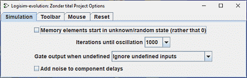

仿真选项卡
仿真选项卡用于配置仿真电路所使用的算法。这些参数适用于同一窗口中仿真的所有电路，即使这些电路位于项目内加载的其他库中也是如此。

-
存储器以随机状态初始化复选框用于决定 RAM、寄存器（D、T、J-K）和计数器的初始化方式。如果未选中该框，所有组件都会初始化为 0。
否则，当您打开项目、放置组件或重置仿真时，寄存器类组件会初始化为未定义值，而 RAM 会初始化为随机内容。 -
振荡判定迭代次数下拉菜单指定在判定电路振荡之前对其进行仿真的时长。该数字表示内部隐藏时钟的节拍数（一个简单门电路仅需一个节拍）。默认值 1,000 几乎适用于所有情况，即使对于大型电路也是如此。
但是，如果您正在处理的电路中 Logisim 报告了虚假振荡，则可能需要增加迭代次数。这在实践中不太可能成为问题，但有一种情况是电路包含许多下述锁存器电路且启用了随机噪声。如果您正在处理的电路容易发生振荡，并且您使用的处理器异常缓慢，则可能需要减少迭代次数。 -
未定义时的门输出下拉菜单配置内置逻辑门在某些输入未连接或浮空时的行为。默认情况下，Logisim 会忽略此类输入，允许门电路在少于设计输入数量的情况下工作。然而在现实中，门电路在这种情况下会表现出不可预测的行为，因此此下拉菜单可改为让门电路把这类未连接输入视为错误。
-
向组件延迟添加噪声复选框允许您启用或禁用添加到组件延迟中的随机噪声。内部仿真使用隐藏时钟进行仿真，为了提供一定程度的真实仿真，每个组件（导线和分线器除外）在接收输入到发出输出之间都存在延迟。如果启用此选项，Logisim 会偶尔（大约每 16 次组件反应一次）使组件比正常情况下多花费一个节拍。
建议保持此选项关闭，因为这种技术确实可能在正常电路中引入少见错误。
下一节： 工具栏选项卡。